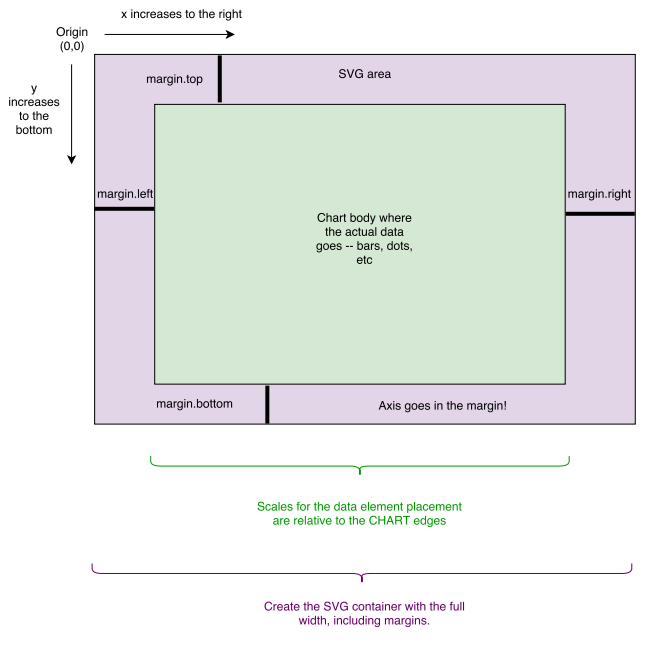

Sortable Tables:
Color scale, linear vs. ordinal:
As I said during class last week, if you want to sort numbers with decimals, use sort_type: float for the header.
Bar charts
SVG Fixes
Removing the text: I was after d3.select("text").remove(); but this will do it too: d3.select("text#svg_28").style("display", "none");
Also, I wanted CSS stylesheet rules for the svg and lines:
<style>
line {
stroke: 3px;
}
svg {
background-color: lightgray;
}
</style>But I accepted those of you who used d3.style() commands on selections!
If you've been doing the reading, you'll notice that d3.select() selects the first matching item, and d3.selectAll() selects all of them. Don't forget this distinction.
You can give svg elements a style attribute, too:
d3.select("rect").style("font-color", "#eee");or assign a class and style via the css sheet:
d3.selectAll("rect").attr("class", "brownrects"); // sets class
or
d3.selectAll("rect").classed("brownrects", true); // adds classOr, of course, you can get SVG specific:
d3.selectAll("rect").attr("fill", "brown");When you are using both styles and "attr" to control appearance, you may have conflicts. One of them will "win."
This is a good reference on SVG styling and what works in CSS and what does not. It depends on the SVG element.
Use style sheets when you can, because you want to keep the formatting independent of the code as much as possible. This makes it easier to swap in a new look without having to hunt through code for the right variables and when they are applied. This means instead of doing hard-coded:
d3.select(‘rect’).style(‘fill’, ‘red’)it’s better to add a class or id and put the style attribute there:
d3.select(‘rect’).attr(‘class’, ‘redrect’)and then in the style sheet:
.redrect { fill: red }For dynamic styling, you want to do it inline, of course. From an excellent article on best practices in D3 coding:
.style("fill", function(d) {
return choropleth(d, colorize);
})
//OVERRIDES
.attr("fill", function(d) {
return choropleth(d, colorize);
})From that article:
"Things can get confusing if you assign a style rule as a style in one place and then
try to re-assign it as an attribute in another. Thus, it’s best to pick one or the other,
and style generally seems more appropriate to me. Note that this does not apply
to element x/y positions or path d strings, which are only available as attributes." What if we want to do special-case rules in our styles? This is easy, with a tiny bit of JS knowledge! Just use an if-statement and test for the special case you want to
use in your style rule:
// this pattern allows you to test the value of a data element, and set the fill
// for a specific value.
rects.attr("fill", function(d) {
if (d.region === "The World") {
return "darkblue";
} else {
return "steelblue";
}
})You could use that same pattern for items with values above a mean, or below. Or median. D3 has some nice math utilities: https://github.com/mbostock/d3/wiki/Arrays. Your if- statement would then have a comparison in it:
// Use a d3 helper function to calculate your median (or mean, or whatever)
var median = d3.median(data, function(d) {
// the value I want to get the mean of:
return d.year2015;
});
rects.attr("fill", function(d) {
if (d.year2015 < median) {
return "red";
} else {
return "steelblue";
}
})If you want to set a different color for an item at a particlar index, you can use the "i" argument:
rects.attr("fill", function(d,i) {
// color the first one darkblue:
if (i === 0) {
return "darkblue";
} else {
return "steelblue";
}
})SVG has its own "text" element. It has slightly different attributes and styling than HTML text.
Important text features -- assuming you have a container where you are attaching it:
container.append("text") // append text to container selection
.style("fill", "black") // fill the text with the colour black
.attr("dy", ".35em") // set offset y position -- will adjust y!
.attr("dx", "2px") // offset x by 2 px to the right!
.attr("text-anchor", "end") // set anchor relative to container - this is right aligned
.text("Hello World"); // define text string to show.The text element is used for labels on axes, on data points, annotations... anything! Be aware that you can adjust the location of the text with a dx or dy attribute, to move it up, down, or to the right. dy with a negative value will move it "up", because the coordinate system is "higher numbers at the bottom of the screen."
Remember that if you already have text items on the page when you try to add new ones (such as doing data labels after axis creation), you will need to be more specific in your data join:
svg.selectAll("text.labels")
.data(data)
.enter()
.append("text")
.attr("class", "labels")
...
Otherwise, you will not see all your new text items appear correctly.
We use a formatter string to describe how we want the number to display:
var formatter = d3.format(",");
formatter(2900000)
\\ output is "2,900,000"See giant reference and demos: http://koaning.s3-website-us-west-2.amazonaws.com/html/d3format.html
We used linear scales for the color background shading in the table, and for the rectangle widths in the basic barchart. We also saw ordinal scales with the colors of text in Week4/scale_examples.html.
All the scale references are here:
In ordinal scales, there is a useful item for categorical axes... the rangebands. (rangeRoundBands s the same except it creates rounded values.)
// from https://github.com/mbostock/d3/wiki/Ordinal-Scales#ordinal_rangeBands
var o = d3.scale.ordinal()
.domain([1, 2, 3])
.rangeRoundBands([0, 100]);
o.range(); // [1, 34, 67]
o.rangeBand(); // 33
o.rangeExtent(); // [0, 100]Remember: rangeRoundBands (plural) sets up the bands. rangeBand() (singular) gives you one of the bands! Range, like in quantitive scales, tells you what you mapped to! rangeExtent is like d3.extent - the max and min of your range.
If you use an ordinal scale with categorical items, like the names of bars in a bar chart, it will "space them out" for you on the scale.
Example: See bar_axes_labels.html.
Remember last week we made a separate array to get the values of a single column of data, using newArray.push? We used this for the max/min/extent in the domain settings on scales.
We can also use this handy Javascript map function in our scale:
var heightScale = d3.scale.ordinal()
.rangeRoundBands([ margin.top, height], 0.2);
heightScale.domain(
// the map function returns an array of all the d.name values only!
data.map(function (d) {
return d.name;
})
);A map is a way to take an array of items (like data) and return a new array, after doing something to each item. It's like data.forEach(), except it can save you some typing and extra variables.
(Be careful. There is also a d3.map, but it does something different.)
You can group elements in SVG using a 'g' node. The group can be where you attach your data, in some cases. It doesn't show up as a drawing element on the screen, it just lets you organize things and with classes or id's, it's sometimes easier for styling or selection purposes.
Groups also allow transforms to be applied to them, which affects everything inside the container.
But -- alert -- despite that article, never use a "file:///" in your URL. I argued about this with him today on Twitter. His examples use no loaded data files, so he has no error such as you will get.
Now that we've seen g's and transforms and the coordinate space, we're ready for the classic on margins. This is a recommended way to set up margins in D3 -- you can use some or all of this pattern (I often skip the "g" translate), but the basic idea is that you have padding around your chart, inside the SVG container. Then all your coordinates take into account the margin sizes as appropriate.

Here is a post by Mike Bostock about the D3 margin convention we will use: http://bl.ocks.org/mbostock/3019563.
var svgWidth = 1000,
svgHeight = 500;
// these are the margins around the graph. Axes labels go in margins.
var margin = {top: 20, right: 25, bottom: 20, left: 200};
var chartWidth = svgWidth - margin.left - margin.right,
chartHeight = svgHeight - margin.top - margin.bottom;When you create your svg element, use the conventional pattern:
var svg = d3.select("body")
.append("svg")
.attr("width", svgWidth)
.attr("height", svgHeight)
.append("g")
.attr("transform", "translate(" + margin.left + "," + margin.top + ")");But in your chart, 0,0 is now the upper left corner inside the margins.
Some more implications of the coordinate system:
A scale for your Y axis values needs to be inverted, if you want higher numbers at the top. Don't forget this - your range is changed so you map this way:
var yScale = d3.scale.linear().range([ height, 0 ]);If you use the margin conventions, which I suggest you do, you will need to pay attention to this from Mike:
var x = d3.scale.linear()
.range([0, width]);
var y = d3.scale.linear()
.range([height, 0]);
If you want to add axes to the chart, they will be positioned correctly by default
in the "left" and "top" orientations. For "right" or "bottom" orientation, translate
the axis G element by the width or height, respectively. [--Mike B]
Let's fix things up in here and move labels: http://blockbuilder.org/arnicas/6217eec849a8f270e80d
To understand how axes work in D3, you need to know about groups ("g" in SVG), transforms, coordinate systems, and scales. So now we're ready!
Axes are a complicated element in D3 that have a lot of little switches to them. The refence with all the options:
And read this:
They are set up as a function, and then applied to your data and graph using a "call" function. You can apply an axis to a selection.
var axis = d3.svg.axis()
.scale(<your scale in here>) // this sets up the right ticks for you!
.orientation("bottom"); // we've created a scale, but it doesn't appear till we call it with an svg selection.
var svg = d3.select("body").append("svg")
.attr("width", 1440)
.attr("height", 30); // may have a group item on it with the 0,0 margin move
// Put them inside a g, group element:
svg.append("g")
.attr("transform", "translate(0," + height + )") // move to the bottom of the chart
.call(axis); // here were 'call' the function for the axis.See bar_axes_labels.html.
If you want to specially format your tick labels, you can. See scatter_formatting_ticks.html.
How to add an axis label to your axes.
This often turns into a trial-and-error routine with transforms. My code in bar_axes_labels.html has:
svg.append("text")
.attr("class", "xlabel")
.attr("transform", "translate(" + (margin.left + width / 2) + " ," +
(height + margin.bottom) + ")")
.style("text-anchor", "middle")
.attr("dy", "12")
.text("Percent");Y axes need a translate, rotate, too. The rotation changes how things are oriented.
svg.append("text")
.attr("transform", "rotate(-90)")
.attr("y", 0 - margin.left) // you may need to adjust this
.attr("x", 0 - (height / 2)) // you may need to adjust
.attr("dy", "1em")
.style("text-anchor", "middle")
.text("Value");Another method for the Y axis rotation:
svg.append("text")
.attr("yLabel")
.attr("transform","rotate(-90) translate(" + (-height/2) + "," + "0)")
.style("text-anchor","middle")
.attr("dy",-60) // this will need a lot of adjusting probably
.text("String Here");I'm not going to lie, it takes me a few tries to get the locations right.
Scatterplots are dots on 2 linear x and y scales, usually. They are useful because they give you a visual sense of whether there is a correlation between two variables (example from Wikipedia):
We make them using SVG circle elements, using a scale for x and y position, based on our data.
Take a look at scatter_formatting_ticks.html.
Live Examples:
A super scatterplot project to keep you motivated - with animations:
http://www.bloomberg.com/politics/graphics/2014-incumbent-governors/?hootPostID=031ede1ff3806f5956e7bdadac068a20
Scatterplots linked to maps: http://anandthakker.github.io/baltimore-neighborhood-vitalsigns/#/i/male10:female10/c/Greater-_Charles-_Village--Barclay/
Let's work on scatter_skeleton.html in class. You will pick two columns you want to visualize for a possible relationship from the dataset in data/betterlifeindex.csv.
Nathan's great post on 0 baseline for barcharts: http://flowingdata.com/2015/08/31/bar-chart-baselines-start-at-zero/
Vox's Line Charts Don't Need to Start At Zero video: http://www.vox.com/2015/11/19/9758062/y-axis-zero-chart
She's a sports vis fan, and her career path is interesting and revealing.
A classic style dot plot: http://www.verisi.com/resources/d3-tutorial-basic-charts.htm#s7
A cool hybrid of a dot plot for times: http://neuralengr.com/asifr/journals/
See a lovely example of dot plots here in Tableau: http://healthintelligence.drupalgardens.com/content/visualizing-human-development-gender-gap
A dot plot example by me -- this is a modification between a bar chart and a scatterplot! dot_plot.html
A long list of CSV datasets...
Readings:
Homework1 (15pt): Turn in the scatterplot we made in class by midnight tonight.
Homework2 (20pt):
Using the bar chart you made already, add a margin (using a margin object) to fix up your bar chart. Use an ordinal axis on the Y axis. Add an X axis label, and special color rule for your barchart (change one of the bars, or bars below or above mean/median to a different color). Also, label the end points of your bars with their actual values (see the SVG Text section of the notes above for tips). Add a hover rule to your CSS, so when the mouse is over the bar, it changes color a little.
Homework3 Extra Credit (15pt):
Make a scatter plot with your own data. Choose a data set that will be appropriate with a scatter plot representation -- comparing 2 scalar (quantitative) values to see if there is a relationship. Write a text snippet that explains it and identifies the source of the data.